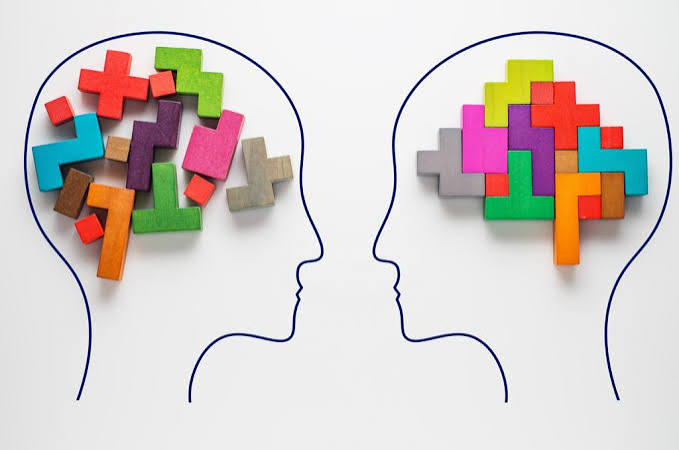

Septiembre es el mes de la salud mental. Este mes es un recordatorio sobre que la salud mental es un tema importante,
que si sientes que algo esta mal en ti acudir a alguien para que te ayude, no estas solo.
No importa a quien acudas, si es de tu confiansa y te apoya eso es algo muy bueno

| Transtorno | Porcentje |
|---|---|
| Ansiedad | 13 |
| De afecto | 6,2 |
| Por uso de sustancias | 2,0 |
| Disruptive (romper con lo establecido de forma brusca o radical) | 10,3 |
| Sufrir mas de una | 20,9 |
La salud mental es el biniestar biniestar emocional,psicologico y social.
Afecta como nos sentimos, actuamos y como tomamos desiciones.
son afecciones graves que pueden afectar la manera de pensar, su humor y su comportamiento.
Pueden ser ocasionales o de larga duración. Pueden afectar su capacidad de relacionarse con los demás y funcionar cada día.